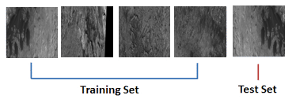
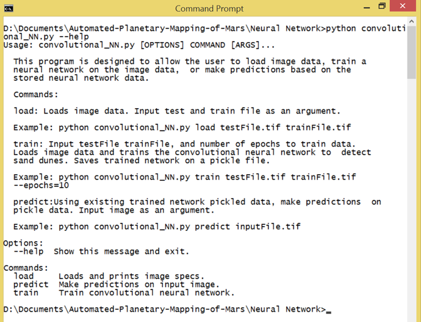

Test Plan Overview
Below is a small overview of the testing we conducted to evaluate our system. The design document can be downloaded here.
Unit Testing
The unit testing of the image processing module will consist of testing individual extension functions. These include getDims, getImage, getTraining, getLabel, and writeImage. The functions serve as tools to grab all the necessary information we need from the images and presents it in a constrained format required by the neural network architecture. As these functions make use of image files and numpy array’s tests will make use of established python libraries for verification of certain aspects. The unit testing of the convolutional neural network will consist of testing individual methods and functions. These include get_labeled_data, trainNetwork, makePredictions, getPredictionData, loadDataset, convolutionalNeuralNetwork, and download_image. The functions and methods serve as components that are dependent on each other to make up the neural network behavior and architecture. It should be noted that running the tests will replace and get rid of any file named “net.pickle”, so all pretrained networks should be renamed or moved in a different location prior to running the tests.10-Fold Cross Validation
- Divided image data into 10 data sets or 10 sub images
- Train on 9 images
- Validate on the remaining image
- Repeat steps above 10 times until each image is used once as validation

Usability Testing
For usability testing our team conducted a user study on the console interface we developed. The study involved our sponsor Dr. Ryan Anderson.
